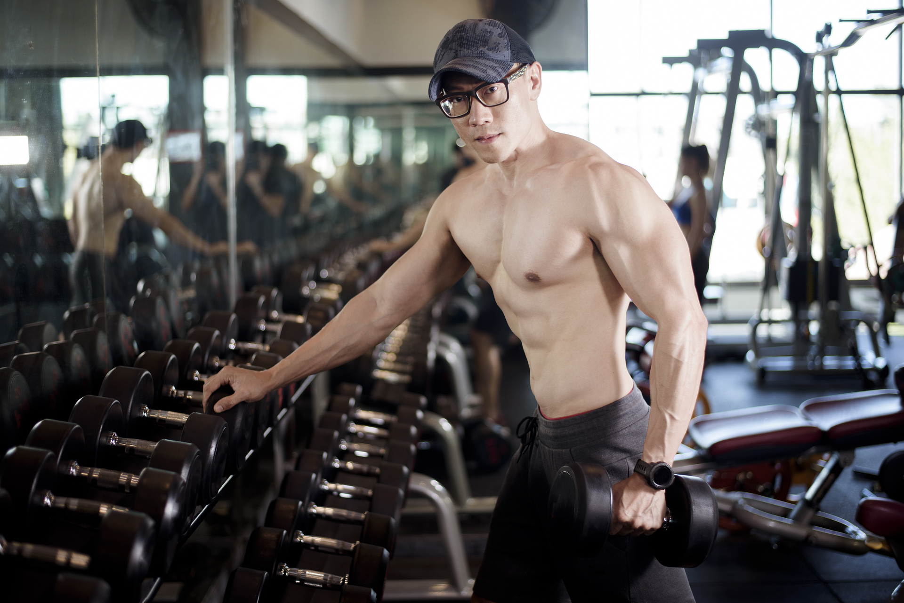

Andrei Arroyo is a dedicated fitness coach that came from humble beginnings. Ten years ago, Andrei was an unathletic teenager with a strong desire to immerse
himself in video games constantly. His poor eating habits began catching up to him, leading to an unhealthy amount of weight gain. Disturbed by the results,
Andrei decided that a transformation was necessary to improve quality of life. From struggling with five pound dumbells to sweating after a single push up, Andrei
never contemplated on giving up. His preserverance and determination paid off. Years later, he entered his first competition in a local Men's Physique show and placed
highly. This was a pivotal time in Andrei's life, as it demonstrated that he had the capacity to compete on a professional level. Andrei now set his eyes on a new
personal goal: compete at the Open Bodybuilding division and obtain a prestigious IFBB Pro Card.
Today, Andrei shares his fitness knowledge with the world. He is passionate about fitness and helping others achieve their fitness goals. From fundamental training mechanics
to advanced nutritional protocols, Andrei is equipped with a wide spectrum of knowledge to tailor to the needs of every client. Andrei exhibits immense patience with clients,
as he knows firsthand that fitness goals require patience and discipline.